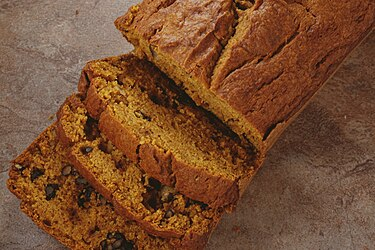
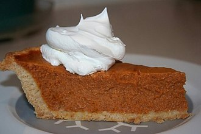
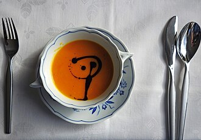

Things to Make With Pumpkins
Pumpkins are a classic autumn gourd. There are lots of things to make with pumpkins, including:
Pumpkin Bread
Pumpkin bread is a sweet, cakey dessert.
Pumpkin Pie
Pumpkin pie is another fall favorite.
Pumpkin Soup
Pumpkin soup is a savory take on how to use this comforting autumn vegetable.
